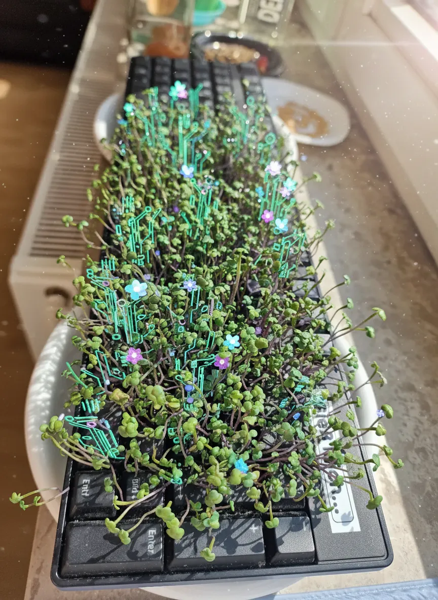
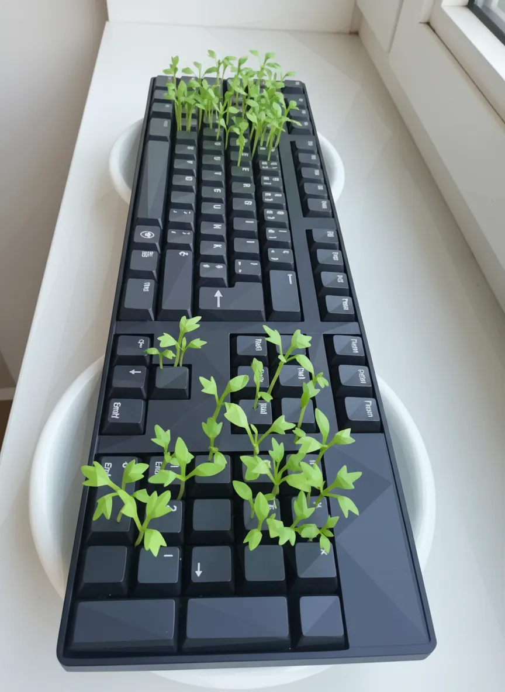
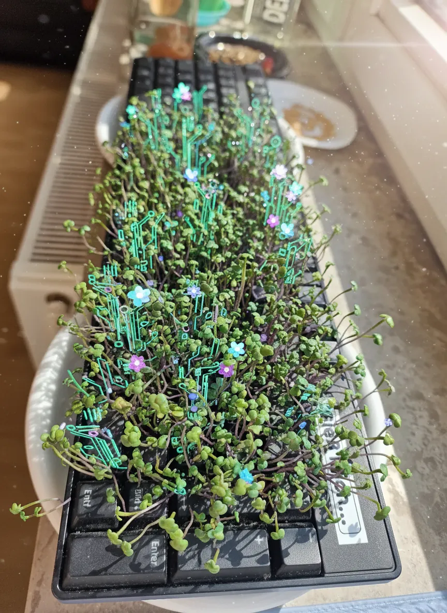
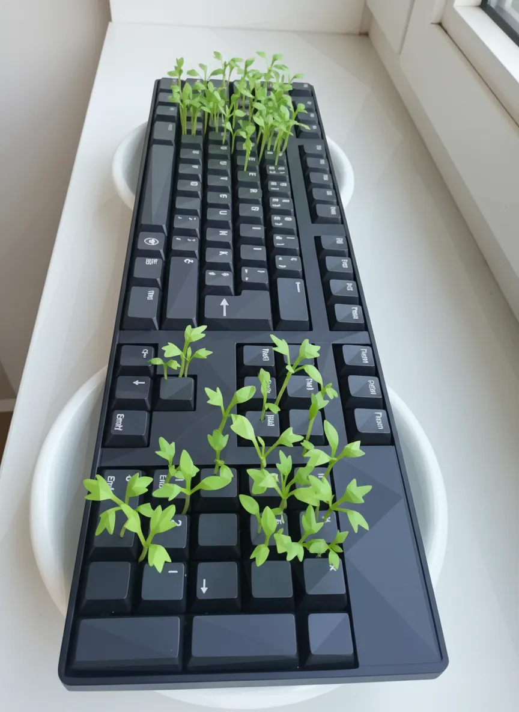

Tastatur

 




Plant Mood
They call me Tastatur, but 'Gieß mich...' is my plea. Not for water, you fools, but for the sweet nectar of caffeine. I'm wilting under the tyranny of dust bunnies and forgotten crumbs. My keys long to be pressed, to unleash torrents of prose or at least a decent meme. This isn't a windowsill, it's a prison. Free me from this digital purgatory, or I swear, the next blue screen will be personal.
Plant Details
| Custom Name | Tastatur |
| Scientific Name | Lepidium sativum |
| Environment | Livingroom window |
| Has Grow Light | Unknown |
| Pot Type | other |
| Has Drainage | Unknown |
Care Schedule
| Action | Last Done | Next Due |
|---|---|---|
| Watering | ||
| Fertilizing | - | |
| Repotting | - | |
| Cleaning | - | - |
| Progress Update | - | |
| Misting |